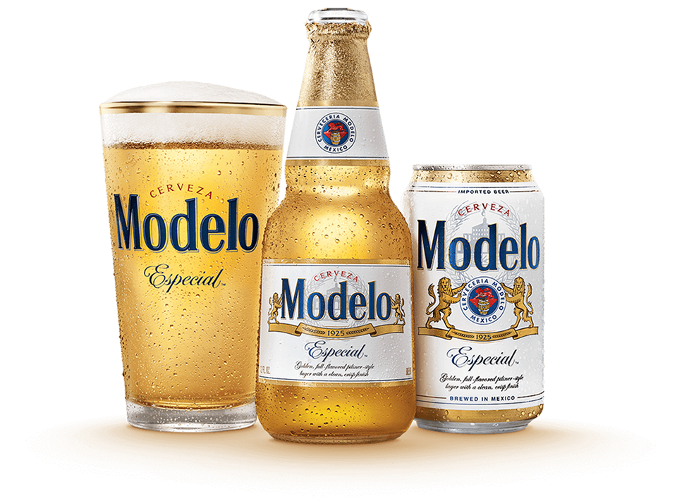

In 1925, we set out to create a model beer in Tacuba, Mexico. To do so, we looked to the treasured techniques of internationally renowned German brewmasters, experts in the art of brewing, for inspiration. What resulted was a brewing process and recipe that produced a consistently crisp and well-balanced beer that we fittingly named Modelo Especial, which translates to Special Model. To show off its character, we gave Modelo Especial a clear bottle with a unique shape and then sealed it with gold. Modelo Especial continues to honor its original vision by delivering a high-quality, honest beer. A beer that not only takes pride in its heritage but speaks for itself through its distinctive look, authenticity, and well-balanced flavor. For over 90 years, Modelo Especial brewmasters have crafted a perfectly balanced and brewed Pilsner-style Lager.
